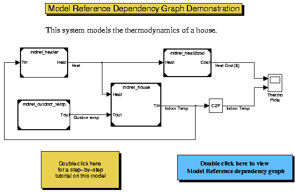
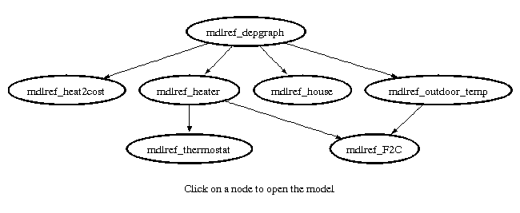

This demonstration explains how to determine and view dependencies among referenced models.
During this demonstration, Simulink generates files in the current working directory. If you do not want to generate files in this directory, you should change the working directory to a suitable directory.
Open the demo model: (matlab:mdlref_depgraph)
open_system('mdlref_depgraph');
 Use the find_mdlrefs utility function to find all Model blocks and referenced models in a model. Type help find_mdlrefs for more information about this function.
[refMdls, modelBlks] = find_mdlrefs('mdlref_depgraph')
refMdls =
'mdlref_heat2cost'
'mdlref_F2C'
'mdlref_thermostat'
'mdlref_heater'
'mdlref_house'
'mdlref_outdoor_temp'
'mdlref_depgraph'
modelBlks =
'mdlref_depgraph/heat2cost'
'mdlref_depgraph/house'
'mdlref_depgraph/outdoor temp'
'mdlref_depgraph/thermostat'
'mdlref_heater/Fahrenheit to Celsius'
'mdlref_heater/Thermostat'
'mdlref_outdoor_temp/Fahrenheit to Celsius'
In this example, find_mdlrefs returns two cell arrays, refMdls and modelBlks. refMdls contains the name of all models that are directly or indirectly referenced by 'mdlref_depgraph'. The last element in refMdls is always the name of the input model. modelBlks contains block paths for all Model blocks in the top model and the referenced models.
Double click on the blue box in the demo model to view the model reference dependency graph. Use the view_mdlrefs utility function to display the model reference dependency graph for a model. The nodes in the graph represent Simulink models. The directed lines indicate model dependencies, e.g., link from mdlref_depgraph to mdlref_house indicates that mdlref_depgraph is referencing mdlref_house.
view_mdlrefs('mdlref_depgraph');
 Note that there is only one node for each model in the graph, and there is at most one link from one node to another node. Therefore, the dependency graph does not capture multiple references from one model to another model. However, since a model can be referenced by multiple models, multiple links can come from several nodes into a given node. You can open each model by clicking on the associated node and you can resize the graph. The File menu offers additional options. For example, you can refresh the figure after modifying the models. It also allows you to open all the models, open the Model Explorer to modify their configurations, save all the models and close all the models.
bdclose('all');
close(gcf);